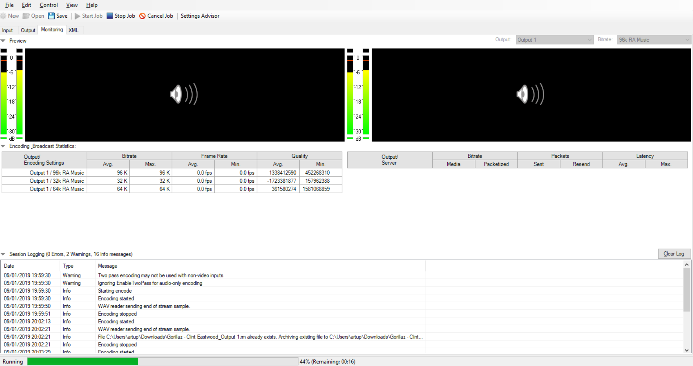
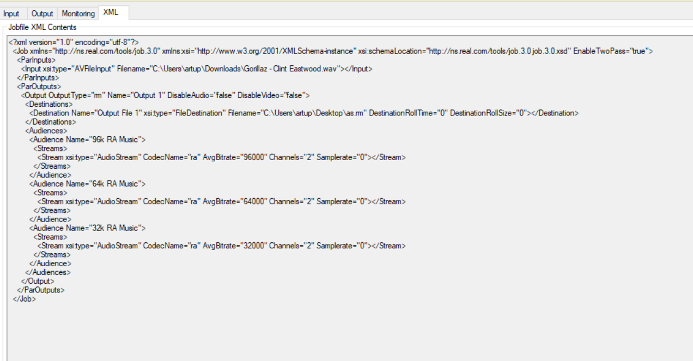

Ejercicio 1 - Codificación de un fichero de AUDIO
Fichero de audio a codificar: Gorillaz - Clint Eastwood

En la pestaña Output seleccione tres audiencias: 32Kbps 64Kbps 96Kbps

Captura de JobFile XML
Tamaño fichero original: 45,2 Mb Formato .wav
Tamaño con tres audiencias: 6,27 Mb Formato .rm
Download file .rm
Tamaño con una audiencia: 2,08 Mb Formato .rm
Download file .rm